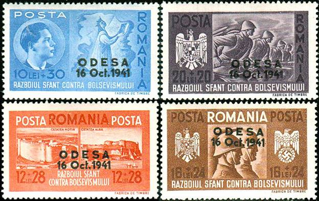
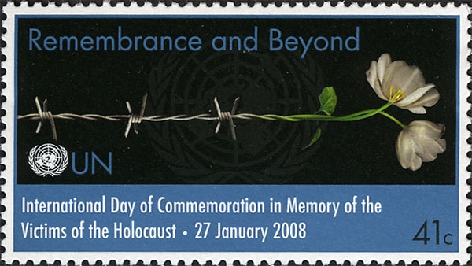
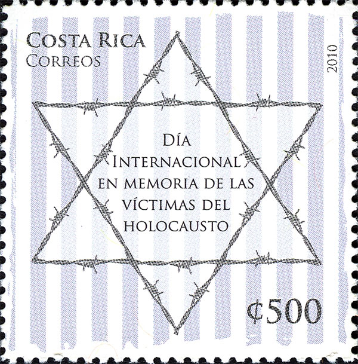
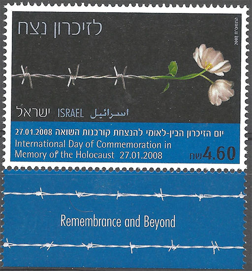
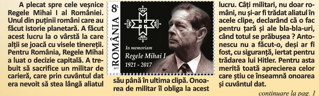
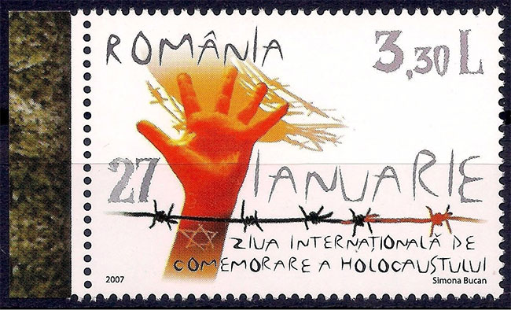

ISTORIA, MĂRCILE POŞTALE ŞI NOI
Victor Manta, PWO
În luna martie a anului 2017 am publicat pe site-ul prezent„ România văzută prin mărcile ei poştale”, articolul filatelic „România - masacrul din Odesa”. Acest articol, apărut pe site în limbile română şi engleză, este accesibil prin adresa următoare. Între timp articolul a fost publicat şi în Vol. LXVIII No. 3 al revistei din SUA, The Israel Philatelist, p. 6 - 9. Prezentul articol a apărut în revista online ACUM.tv.
Introducere - Peripeţiile publicării articolului în România
Deoarece am colaborat timp de mulţi ani cu revista philatelica.ro din România, în martie 2017 i-am propus spre publicare articolul respectiv editorului acestei reviste şi, în aceeaşi zi, am primit de la proprietarul ei, dl. Dan Dobrescu, răspunsul că articolul va fi publicat în luna septembrie 2017. Excelent, mi-am zis eu, şi am început să aştept draftul de la revistă.
Cum nu am mai auzit nimic, m-am informat pe 8 ianuarie 2018 cu privire la stadiul publicării şi am primit răspunsul că articolul va apare în martie 2018. Dl. Dobrescu şi-a cerut prin email chiar şi scuze pentru întârziere.
Deoarece până la mijlocul lui martie nu am primit articolul pentru a da un bun de tipar, mi-am permis să mă informez din nou prin email cu privire la stadiul publicării, drept care am primit mesajul surprinzător de mai jos:
Dupa consultarea catorva din autorii revistei […], revista de filatelie, am ajuns la concluzia ca ilustrarea cu timbre nu e corespunzatoare temei ci o răstoarnă; una e pe timbre, altceva în explicații. Marcile postale prezentate nu au nimic de a face cu subiectul abordat - Masacrul de la Odesa - si se forteaza nepermis de mult . Apoi mai sunt si interpretari foarte persoanle ale Dvs, gen caracterul antisemit al sloganului Razboiul Sfant contra Bolsevismul. E mult prea mult spus.
Din punct de vedere istoric tema ororilor comise de autoritatile romane in Transnistria este des abordata de istorici. Din acest punct de vedere Dvs, nefiind istoric, preluati unele clisee, fara argumentele necesare sustinerii si mai ales rupte din context.
Cred ca din punct de vedere istoric este un subiect delicat, nici Dvs care nu sunteti istoric, nici revista care nu este specializata pe istorie si nici cititorii nu sunt avizati in acest domeniu.
Avand in vedere cele de mai sus apreciez ca articolul nu este publicabil in revista de filatelie [...].

Fig. 1. România. 1941. Ocuparea Odesei, USSR. Supratipare. Sc. B175 - B178
După acest răspuns am rupt imediat legăturile cu Dan Dobrescu şi cu revista sa. Nu pot să spun că, aflând despre încetarea apariţiei revistei philatelica.ro în 2019, am regretat dispariţia ei, aceasta pentru motivele explicate mai jos.
Observaţiile şi comentariile mele
Eu cred că numai nişte naivi (lucru de care nu îi bănuiesc pe sfătuitorii d-lui editor) pot să se aştepte să găsească pe timbrele unui regim criminal imagini ale măcelurilor perpetrate de el. Cum vorbim despre istorie, eu, ca autor filatelic, îmi propun să descopăr şi să dezvălui ce se ascunde în spatele inscripţiilor şi imaginilor de propagandă, jubilatoare şi/sau triumfătoare, pe care le conţin mărcile poştale emise de dictaturile trecutului. Un exemplu în acest sens îl constituie un alt site de-al meu, în limba engleză, intitulat „Comunismul pe mărcile poştale”, accesibil prin linkul următor.
Mărcile româneşti prezentate de mine în articol (vezi şi mai sus), supratipărite ODESA, comemorează cucerirea în 1941 a oraşului de către trupele româneşti. De regulă folosirea supratipăririi exprimă dorinţa autorilor lor să comunice repede ceva important, sau de care se mândresc, de la o victorie militară la o izbândă sportivă. După cucerirea a Odesei au urmat masacrele împotriva populaţiei evreiești, perpetrate atât de armata română, cât şi de civili români radicalizaţi de propaganda antisemită a statului român (vezi Anexa). Nu eu, autorul articolului, sunt cel care ar fi forţat orice ar fi fost, ci evenimentele de atunci m-au determinat să precizez ce comemorau de fapt timbrele arătate.

Fig. 2. United Nations, NY. 2008. International Day of Commemoration in Memory of the Victims of the Holocaust
Este meritoriu că tema ororilor datorate autorităţilor române de ocupaţie a Odesei, Transnistriei, şi a altor regiuni a fost abordată de istorici, acesta fiind şi motivul pentru care eu am putut prelua din concluziile cercetărilor acestora. Ceea ce am afirmat provine din diverse surse, cea principală fiind indicată în articol (Wikipedia). Îi trimit pe criticii articolului meu şi la Anexă, în care am spicuit din ceea ce relatează un cunoscut istoric contemporan din România. El vorbeşte clar şi răspicat şi despre împletirea de către oficialii şi propagandiştii români ai vremii a luptei contra bolşevismului cu antisemitismul, ceea ce am afirmat în articol.

Fig. 3. Costa Rica. 2010. International Holocaust Remembrance Day
Înclin să cred că ceea ce numeşte dl. editor „clişee fără argumente” provine din cele întipărite adânc în concepţia şi memoria acelora care i-au comentat articolul meu, limitări de care nu reuşesc să se mai descotorosească. Aceasta îi împiedecă să lepede ochelarii de cal şi să vadă trecutul despre care vorbesc şi timbrele, şi apoi eu, în tot tragismul şi realitatea crudă a acestuia.
Subiectul nu a fost şi nu este „delicat” decât pentru cei care încearcă să îl camufleze, să se descotorosească de el deoarece nu reuşesc să se desprindă de clişee de tipul "glorioasa armată română". Ea a avut şi momente de glorie, dar printre ele nu se numără trenurile morţii şi crimele contra evreilor perpetrate în Basarabia, Bucovina şi Transnistria, administrate de România de atunci, în colaborare cu aliaţii ei germani.
Anumite timbre înglobează nişte adevăruri sinistre, ce trebuie cunoscute, şi nu ascunse sau ocolite, privind în altă parte. Desigur că orice revistă poate să publice ceea ce doreşte ea, lucru pe care de altfel îl şi face cea menţionată (vezi Comentariul nepublicat de mai jos), chiar dacă, din păcate, pe baza unor stereotipuri pescuite din apele cele mai tulburi.

Fig. 4. Israel, 2008. International Holocaust Remembrance Day. Joint Issue with United Nations
Un comentariu nepublicat

Fig. 5. Extras din philatelica.ro. Despre onoarea militară antonesciană
În emailul către editor, în care îl întrebam despre situaţia publicării articolului meu, am propus totodată şi publicarea separată a următorului meu comentariu, referitor la ce apare în Fig. 5 de mai sus.
Din articolul apărut în parte şi pe coperta numărului […], aflăm că „onoarea de militar” l-a obligat pe mareşalul Antonescu să „stea lângă aliatul său (Hitler - n.a.) până în ultima clipă”. Mai aflăm şi că „pentru aceasta merită aprecierea celor care ştiu ce înseamnă onoarea şi cuvântul dat”.
În articolul meu filatelic despre masacrul din Odesa, ce urmează să fie publicat […], am arătat că Antonescu a fost responsabilul suprem pentru masacrarea a mii de ostateci civili, ceea ce a făcut din el un criminal de război, lucru incompatibil cu vreo pretinsă onoare de militar.
Cred că este inutil să precizez că nu am primit nici un răspuns de la dl. Dan Dobrescu, legata propunerea mea de publicare a comentariului de mai sus. Găsesc că se poate detecta cu uşurinţă o legătură între refuzul publicării articolului meu şi ignorarea comentariului menţionat, cel care vorbeşte despre pretinsa « onoare a mareşalului Antonescu ».
Fig. 6. Israel, 2010. International Holocaust Remembrance Day
Despre mărcile care însoţesc acest articol
Am ilustrat acest articol cu seria supratipărită România 1941, Ocuparea Odesei, Sc. B175 – B178 (Fig. 1) şi cu timbrele prin care Naţiunile Unite, Israelul, Costa Rica şi România au onorat Ziua Internaţională de Comemorare a Holocaustului, o zi decisă de Naţiunile Unite. Ziua de 27 ianuarie, cea în care au fost emise timbrele, este ziua în care a fost eliberat lagărul de concentrare de la Auschwitz-Birkenau, cel mai mare lagăr nazist. Cuvântul de origine greacă "Holocaust" este denumirea dată acţiunii de exterminare a evreilor în cel de Al Doilea Război Mondial.

Fig. 7. România, 2007. International Holocaust Remembrance Day
Ziua Naţională de Comemorare a Holocaustului este şi un eveniment naţional marcat pe 9 octombrie în România, dedicat comemorării victimelor Holocaustului şi, în special, rolului României în acest episod al istoriei. În această zi, diverse ceremonii au loc în toată ţara, pentru a comemora evreii şi rromii care au murit în Holocaust. Data de 9 octombrie a fost aleasă deoarece în acea zi, în anul 1941, a început deportarea evreilor din Bucovina în Transnistria. Nu a fost (încă?) emis un timbru comemorativ prilejuit de acestă Zi Naţională.
ANEXĂ
„Anuarul Institutului de Istorie «G. Bariţiu» din Cluj-Napoca”, tom. XLVII, 2008, p. 377-425.
OCUPAREA ORAŞULUI ODESSA DE CĂTRE ARMATA ROMÂNĂ ŞI MĂSURILE ADOPTATE FAŢĂ DE POPULAŢIA EVREIASCĂ
OCTOMBRIE 1941 – MARTIE 1942.Ottmar Traşcă. Institutul de Istorie „George Bariţiu” din Cluj-Napoca
(Extrase relevante, textul complet şi foarte interesant fiind accesibil aici)
Studiul nostru îşi propune să investigheze şi să reconstituie, pe baza literaturii de specialitate, dar şi a unor surse documentare române şi germane inedite, politica promovată de autorităţile militare române faţă de populaţia evreiască a oraşului Odessa în primele luni ale ocupaţiei româneşti, respectiv perioada dintre lunile octombrie 1941 şi februarie 1942. Am ales nu întâmplător acest interval de timp, întrucât, aşa cum vom vedea în cele ce urmează, el a coincis cu ghetoizarea şi exterminarea unui mare număr de evrei de către Armata română, apoi cu deportarea ulterioară a supravieţuitorilor în lagărele din Transnistria. [...]
În fine, ultimul decret referitor la constituirea Guvernământului Transnistriei a fost semnat de mareşalul Ion Antonescu la 17 octombrie 1941, a doua zi după căderea Odessei. Decretul stipula trecerea Odessei sub administraţie românească şi transformarea ei în capitală a Transnistriei. ...
În schimb, Transnistria avea să cunoască în scurt timp o notorietate sinistră, devenind ceea ce Alexander Dallin a denumit în mod sugestiv „groapa etnică a României”, un adevărat teren de experimente etnice şi rasiale. În lagărele de internare constituite pe teritoriul Transnistriei aveau să-şi găsească sfârşitul în cursul celor trei ani un mare număr (cifrele variază între 150.000 şi 210.000) de evrei deportaţi din celelalte provincii româneşti, îndeosebi din Basarabia şi Bucovina de nord.
Există suficiente dovezi documentare care atestă faptul că, încă de la debutul conflictului sovieto-german, autorităţile române au „identificat”, alături de regimul sovietic, populaţia evreiască din Basarabia şi Bucovina de nord drept principalul element de susţinere şi răspândire al comunismului, aceasta fiind considerată „responsabilă” în bună măsură inclusiv pentru suferinţele îndurate de populaţia românească în timpul ocupaţiei sovietice. În consecinţă, factorii decizionali români au prezentat participarea României la ostilităţi – în faţa opiniei publice, dar şi a populaţiei din Basarabia şi Bucovina de nord –, nu numai ca o campanie destinată a elibera cele două provincii de sub dominaţia bolşevică şi a reîntregi frontierele amputate în anul 1940, ci şi ca o bătălie purtată împotriva comunismului şi evreilor. Astfel, afişele propagandistice ale armatelor a 3-a şi a 4-a române abundau în lozinci de tipul: „Armatele română şi germană luptă contra comunismului şi jidanilor şi nu contra soldatului şi poporului rus”; „Războiul a fost provocat de jidanii lumii întregi. Luptaţi contra provocatorilor de războaie !”; etc.
Autorităţile civile şi militare române nu s-au limitat doar la multiplicarea şi răspândirea afişelor propagandistice antisemite – prezentate anterior –, ci au elaborat inclusiv planuri ce vizau activarea sentimentelor antisemite în cadrul populaţiei româneşti din cele două provincii. [...] Prin urmare, nu trebuie să surprindă faptul că, în urma unor asemenea instigări, a propagandei antievreieşti virulente şi a măsurilor antisemite iniţiate şi aplicate de autorităţile militare române în colaborare cu cele germane, în timpul operaţiunilor militare desfăşurate în Basarabia, Bucovina de nord şi Transnistria s-au înregistrat numeroase atrocităţi îndreptate împotriva populaţiei evreieşti. ...
[...] textul unei directive, adresată la 5 septembrie 1941 de Ion Antonescu chiar de pe frontul din faţa Odessei vicepreşedintelui Consiliului de miniştri, Mihai Antonescu. [...] "Toţi evreii să fie readuşi în lagăre, preferabil în cele din Basarabia, fiindcă de acolo îi voiu impinge în Transnistria, imediat ce mă voiu degaja de actualele griji. Trebuie să se înţeleagă de toţi, că nu este luptă cu slavii, ci cu evreii. Este o luptă pe viaţă şi pe moarte. Ori învingem noi şi lumea se va purifica, ori înving ei şi devenim sclavii lor".
Mai mult, mareşalul Ion Antonescu a emis în aceeaşi zi (23 octombrie - vm), orele 12.30, un nou ordin (nr. 562) care solicita să se treacă la „represalii severe” şi indica cine erau în opinia sa „vinovaţii” pentru atentat:
„a/. Pentru fiecare ofiţer român sau german, mort în urma exploziei, vor fi executaţi 200 de comunişti; Pentru fiecare soldat mort câte 100 de comunişti. Execuţiile vor avea loc în cursul zilei de astăzi.
b/. Toţi comuniştii din Odessa vor fi luaţi ca ostatici, de asemenea, câte un membru de fiecare familie evreiască. Li se va aduce la cunoştinţă că, la un al doilea act asemănător, vor fi executaţi cu toţii. [...]".